馬来西亜珍寺大行進、お次の修行はイポーを離れ、
クアラグラ（ＫｕａｌａＧｕｌａ）という海沿いの小さな村に向かった。
クアラグラは干潟でのバードウォッチングが有名だが、一歩内陸に入れば気が遠くなりそうなほど広大な
オイルパームのプランテーションが地の果てまで続く。
オイルパームとはいわゆるパーム油の原料で、ココナッツの実が成る椰子の木よりも背が低くどちらかというとソテツの親分みたいな感じ。
基本的には食用油やマーガリンの原料だが、近年は工業用や医療用、更にはバイオ燃料としても注目されているとか。
ちなみにマレーシア全土には5億本のパームツリーがあり、全世界のパーム油の生産高のほぼ半分を占めている。
ある意味もっともマレーシアらしい光景といえよう。
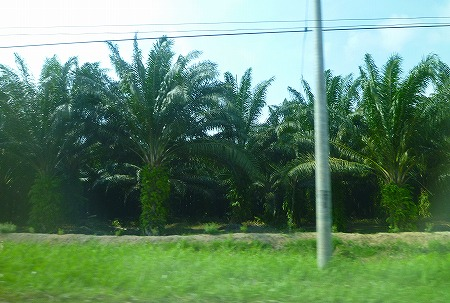
そんなオイルパームの大海原のど真ん中に
コンクリ人形による立体地獄があるというのだ。
プランテーション内の農道を通っていくため物々しい検問所を通らなければならない。
熱帯のプランテーションって、植えたらあとは勝手に育つのを待つような大らかなところだと想像していたが、意外と厳しいんだな。ヤシ泥棒とかいるんだろか？
未舗装の農道をしばらく進むと入り口が見えてきた。華聖宮という寺だ。
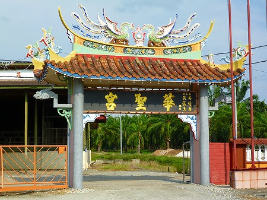
ご覧の通り100パーセント、チャイニーズスタイル。
つまりこのプランテーションの持ち主が華人だ、ということなのだろう。
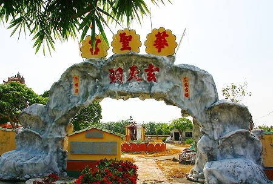
コンクリのモフモフしたゲートを潜るとその先にはマーライオンを中心に様々なコンクリ動物が俺様のお出ましを出迎えてくれていた。
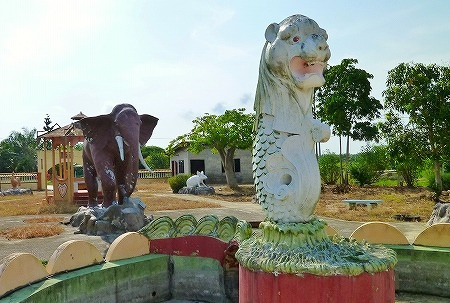
いや。結果、出迎えてくれたのはこのコンクリ動物だけだったんですけど…。
入り口のゲートが物々しかったので、境内にサブマシンガンを持った民兵がウロウロしていたらヤだな〜、などと思っていたら民兵どころか人っ子一人居ませんでしたよ。
牛！
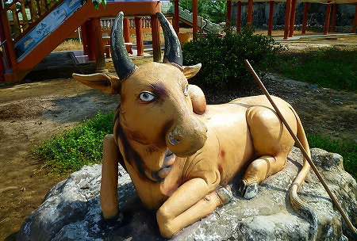
猿！
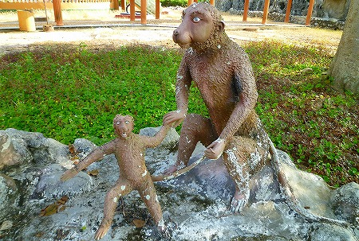
これは…ライオン？
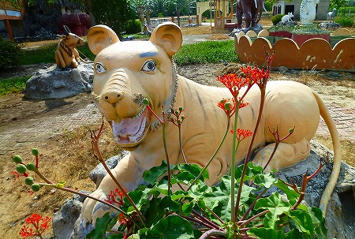
どっかのブランド品みたいな犬。
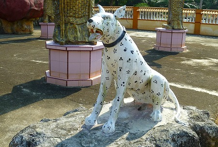
…どの動物も眼がイッちゃってて、じっと見ていると
「こんなトコで何やってんだ俺」感にさいなまれるのであった。
さらに版権が半端ないあのネズミや
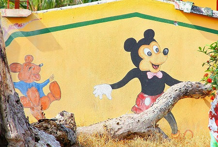
あのアヒルや
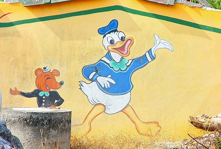
ホウレン草が大好きなあの水夫の姿が。
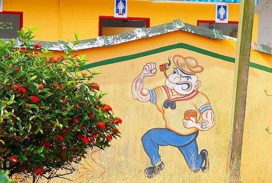
…わざわざこんなモノを作る意図がまったくわからないのだが、面白いからいいのである。
マレー半島のプランテーションのど真ん中には著作権などといった生ぬるい法律は及ばないのである。
ここは
プランテーションのロジックと仏法のみが全てを支配する、剥き出しのフロンティア世界なのだ。
てなわけでコアな信仰施設のあるエリアに行ってみよう。
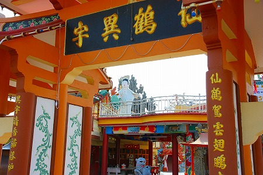
いたって普通の中華スタイルのお堂の後ろには
大観音サマがお出迎え。
その背後には人工の築山、さらにその向こうには
形容し難い奇妙なお堂が建っているのが見える。
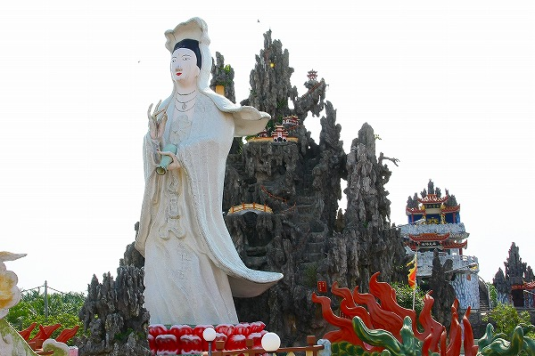
インディーズ臭漂う御顔の観音サマ、衣は全てタイル貼りであった。
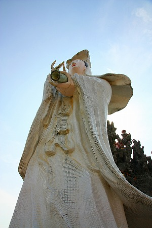 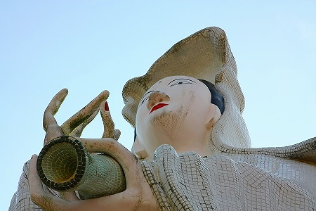
このように左手に徳利を持っている観音像を良く見かけるが、これは水瓶（すいびょう）といい、功徳水を尽きることなく衆生に与えている姿なのだとか。
別に「まあ、まずは一杯、おっとっとっと…」とかやってるわけではないのだ。
徳利、もとい。水瓶の内側までタイルを貼るほど細かい仕上げなのに御顔がユニークすぎるぞ。
観音サマの目の前には池があり、その先には鶴の舞う門がある。
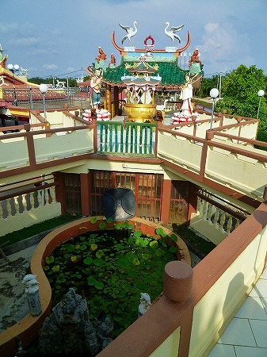 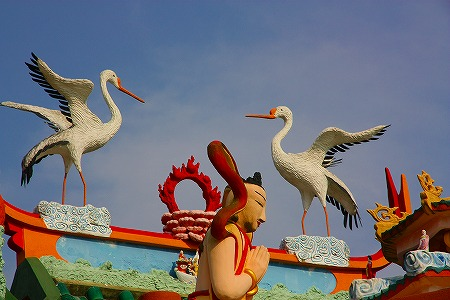
ステキな龍。勿論お口の中は階段になっていて、観音サマの足元まで上れます。
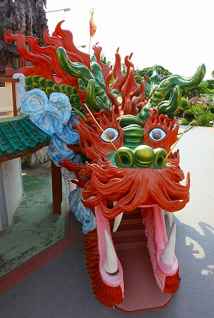
先ほどの珍妙な動物や観音像、後述する諸々のエレメントなどと比べてもどういうわけかこの龍だけが出来が良い。
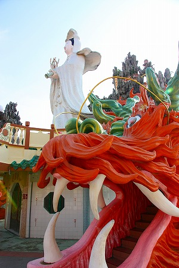
もしかしたらこの龍だけ後から作られたのかもしれない。
龍の口の中。微妙なシワシワとか良い感じでしょ？
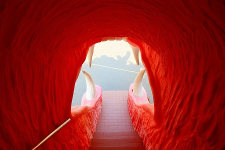
観音サマの後ろにそびえるのは
人工の岩山。

コンクリの躯体に火山岩を貼り付けたものと思われるが、本当に自然の岩山なのでは？と思えるほど丁寧に作ってある。
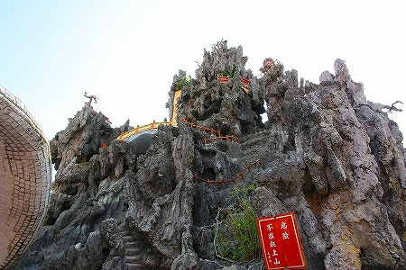
先にも述べたが、このような人工の築山は中国のお寺では比較的ポピュラーな存在だ。

岩山の合間合間にミニチュアの建物や橋、階段などを設置し、見る者をミクロの世界へと誘う。
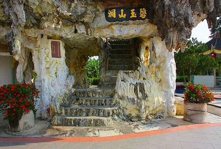
その様はヨーロッパのグロッタを髣髴とさせるような複雑さと重層性を併せ持つ、
官能的かつ魅惑的な宇宙の縮図だ。
そうこうしているとこんな看板が。

遊覧十八地獄 由楼梯上 とある。
遊覧…ですか。
あの建物ですな。
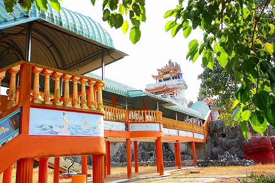
学芸会の書き割をそのまま現実の建物にしてしまったような、
夢見がちな仏堂である。

仏堂と雲とお菓子の城を足して足しっぱなしのドリーミーな建築。素晴らしいね。
崇高なる理想に建築的技術が全然追いついていないところがこの建物の最大のチャームポイントと見た。
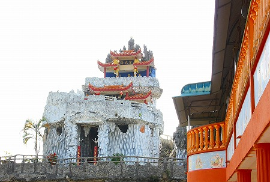
振り返れば先ほどの築山が。
そしてその手前にはレゴブロックでつくったような城壁とコブラが。
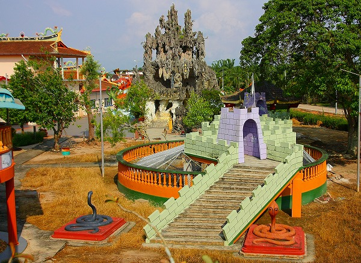
この寺ではたま〜に超力作があると思えばその直後に驚くほどぞんざいなエレメントが現れる。
その両極端の組み合わせこそがこの寺の味わいなのかも知れない。
では謎の堂宇に入ってみようか。
左右の柱にはそれぞれ下は地獄、上は天庭的な事が書かれていた。
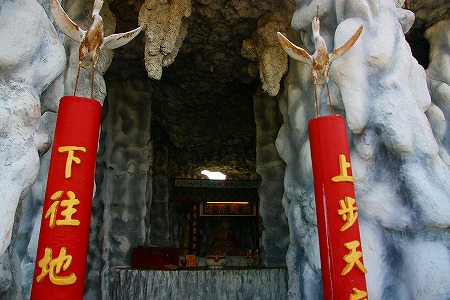
で、地獄といえば地蔵菩薩。
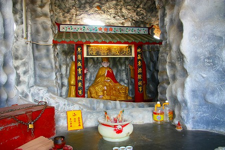
壁のモフモフ感は砂袋にセメントを吹き付けるという豪快な手法。所々吹きつけコンクリが剥がれていてチョット危ない。

モフモフ壁が延々と続くので、段々巨大生物の胃の中にいるような感覚に陥ってくる。
上のフロアに行ってみる。
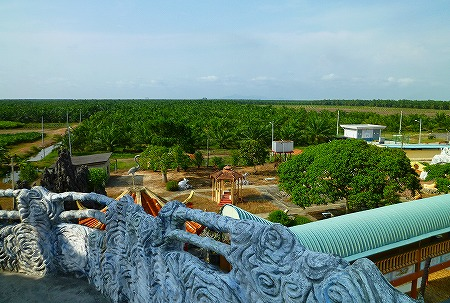
見渡す限りのパームツリー畑。地平線まで、いや地平線の向こうまでこの光景が続いていることあろう。
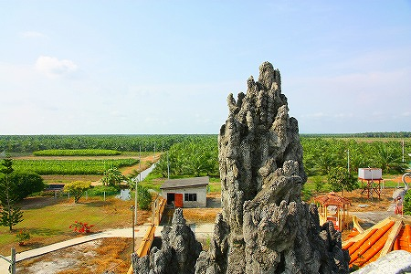
パームツリー以外何もない地の果てのような場所と、そこに建つカラフルな中華寺院の対比が面白い。
でもどちらも異国の地で周囲の環境と交わらず、自己の生産と拡大を目指す点では似たもの同士なのかもしれない。
…振り返ればこんな方々がいらっしゃった。
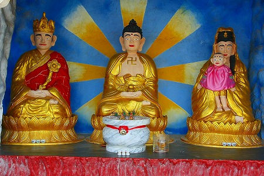
右の子供とか堪らんですね。
さらに上のフロアには玉皇大帝がいらっしゃった。道教の最高神である。
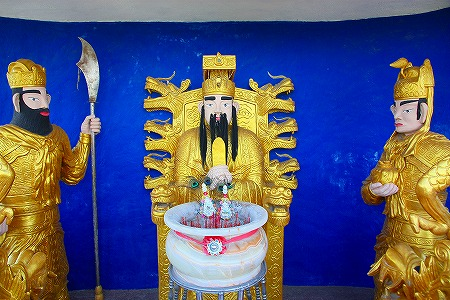
最上階からの眺め。
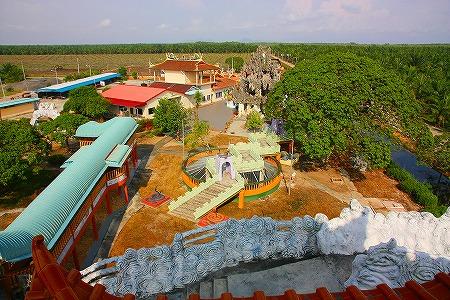
聞くところによるとパームツリーのプランテーションは大規模なジャングルの開墾と生産過程における廃液により深刻な環境問題を引き起こしているとか。
一見、南国っぽい雄大な風景だが、人の手によって作られた
人工的な植物工場であることは肝に銘じなければなるまい。
前置きが長くなってしまいました。
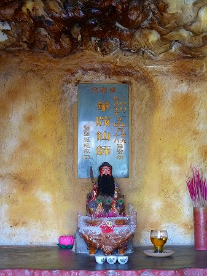
ちょっとインターバルを置いてから、お目当ての立体地獄に行きましょうぞ！
馬来西亜珍寺大行進
珍寺大道場 HOME